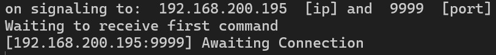
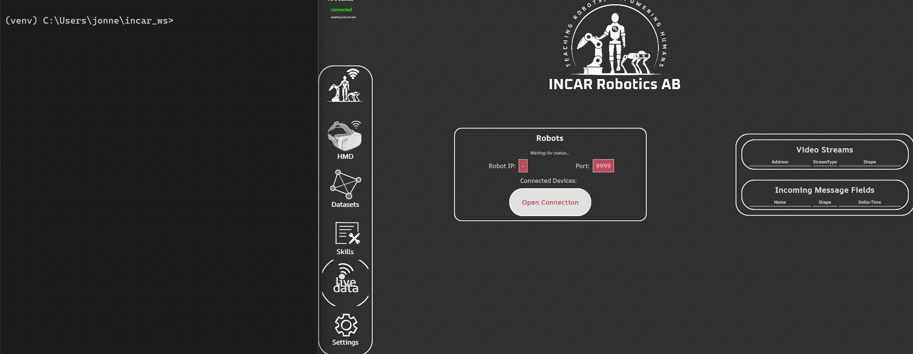
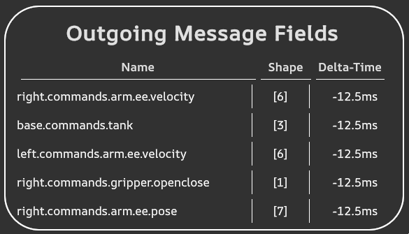
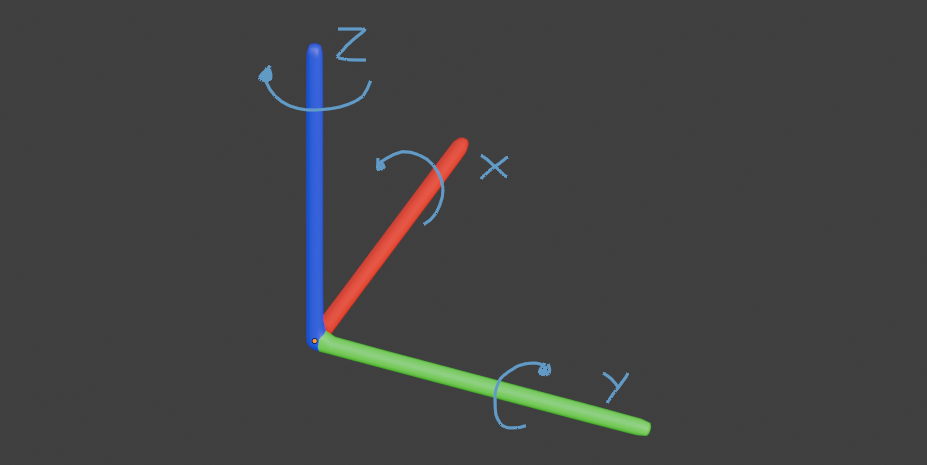

Teleoperate your robot
In order to connect to the robot, an Incar Robot Interface needs to be started with the robot. Then, a connection is as simple as entering the IP and pressing connect, and teleoperation works.
While some robots may already have integrations into this interface available on GitHub, it could still be good to understand how this integration works in case you want to adapt it to your needs. The following robots have out-of-the-box integrations available:
You can jump to the teleoperation controls here.
Prerequisites
In order to create the Incar Robot Interface for the robot, ensure that you are in an environment with incar_networking installed. If you are in the same environment as where you installed the incar package, incar_networking is already installed. If you are on another device, the incar_networking package only contains the bare essentials for the required networking and is thus lightweight.
python -m venv incar
source ./incar/bin/activate
pip install --index-url https://packages.incar-robotics.se/simple/ --extra-index-url https://pypi.org/simple incar_networking
python -m venv incar
incar\Scripts\activate
pip install --index-url https://packages.incar-robotics.se/simple/ --extra-index-url https://pypi.org/simple incar_networking
Furthermore, you should have a controller for the robot. Out of the box, incar can stream cartesian velocity commands, but it is possible to create your own commands as well in case you want to use for example relative position commands or joint commands.
Success
Check if your robot controller works as expected by streaming sinusoids prior to starting teleoperation.
Creating the interface
In a python file, create the Incar Robot Interface like so
| my_robot.py | |
|---|---|
1 2 3 4 5 6 | |
When you run the python script, notice how the Incar Robot Interface automatically opened a port for the system to connect to.

You can also pass in a specific IP to open the port on, in case you want to use localhost or have multiple network cards. E.g. when using interface.start("127.0.0.1"), we can start the interface on localhost. In the GUI, you can connect to the interface by putting the IP and pressing connect.

Command hooks
The Incar Skill System streams command dictionaries to the robot, which contains multiple keyed commands which are arrays of floats. By default, the commands for the arm are cartesian velocity commands, but it is possible to create your own commands as well in case you want to use for example relative position commands or joint commands.
In the GUI, it is possible to see what commands are being streamed to the controller. If you do not see the outgoing commands overview, open the live data panel first.

Standard Outgoing Commands
The system sends some outgoing commands out of the box:
right/left.commands.arm.ee.velocity, velocity in m/s and rad/s, left-handed coordinate system with Z up and clockwise rotations.right/left.commands.gripper.openclose, a value between 0 and 1 for opening and closing the gripperbase.commands.tank, [xdot, ydot, thetadot] in m/s and rad/s
We can hook into these commands as follows. Each callback takes in a list of floats for the commands.
| my_robot.py | |
|---|---|
1 2 3 4 5 6 7 8 9 10 11 12 13 14 15 16 17 18 | |
The functions on line 5 and 6 need to be implemented by you based on the robot. You can check out the UR example for an example.
Warning
The [left/right].commands.arm.ee.velocity commands take in rotational velocity in radians per second. Make sure to take care of the coordinate frame as well. The incar coordinate frame is a left-handed coordinate frame with z pointing up, and rotations in clockwise order. Your robot might use another coordinate frame, however.

Teleoperate Multiple Robots
you can teleoperate multiple robots at the same time using just the single incar interface. Just assign different robots to each command hook! For example:
if __name__ == "__main__":
dt = 0.01
left_robot = MyRobot(left_robot_identifier)
right_robot = MyRobot(right_robot_identifier)
interface = IncarRobotInterface(
dt,
command_hooks = {
"left.commands.arm.ee.velocity": left_robot.cartesian_velocity_command,
"left.commands.gripper.openclose": left_robot.gripper_command,
"right.commands.arm.ee.velocity": right_robot.cartesian_velocity_command,
"right.commands.gripper.openclose": right_robot.gripper_command
}
)
interface.start()
Teleoperation
To teleoperate, connect the headset to the Incar Skill System, and connect the system to the robot.
Warning
Calibrate the origin of the controller to the robot base frame by aligning the controller with the robot, and pressing primary + secondary until the controller vibrates. You can look through the app for an aid of how to align the controller.

Now, when pressing the grip + primary button, the robot will follow the motion of the controller. The grip + trigger button will control the gripper.

Next step: Send back robot state.
UR Example
1 2 3 4 5 6 7 8 9 10 11 12 13 14 15 16 17 18 19 20 21 22 23 24 25 26 27 28 29 30 31 32 33 34 35 36 37 38 39 | |